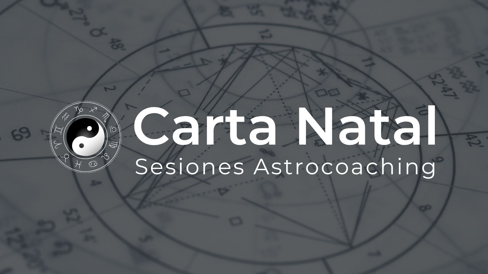
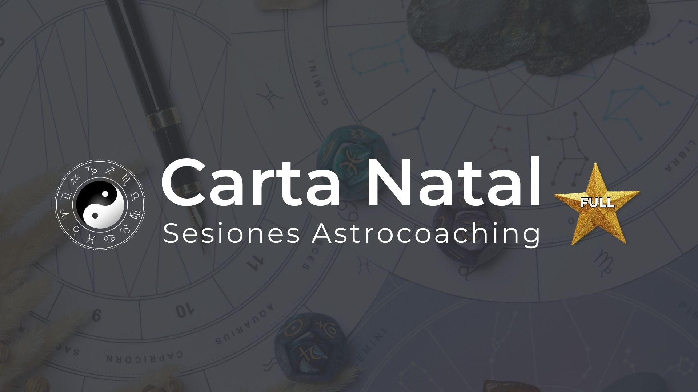
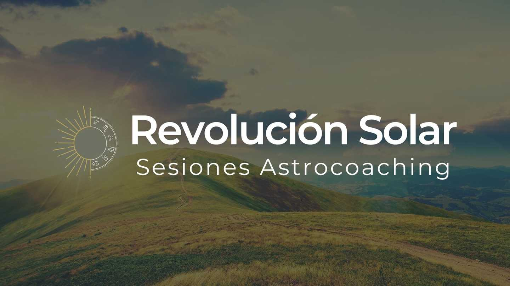
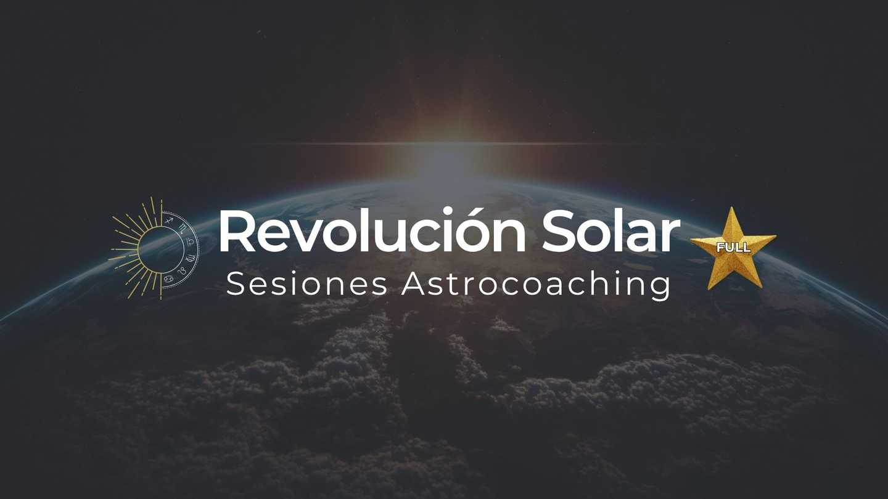
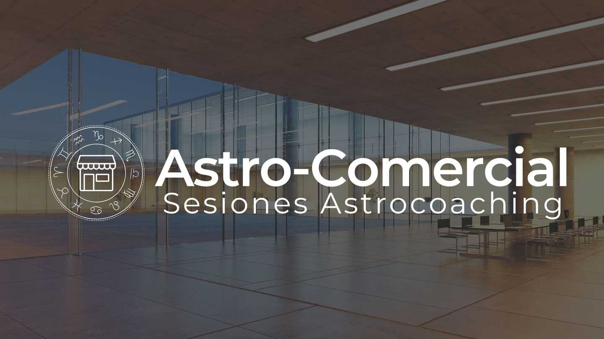

Servicios
Sesiones 1:1

Carta Natal Basic
Sesión inicial para entender los puntos clave de tu carta natal.

Carta Natal Full
Análisis completo y detallado de tu mapa astrológico, con proyección a futuro.

Revolución Solar Basic
Análisis de los tránsitos y energías que te acompañarán durante tu próximo año.

Revolución Solar Full
Análisis avanzado del año en curso, con enfoque en tus metas y desafíos.

Análisis Vocacional
Descubre tu vocación y talentos únicos a través de la astrología.

Análisis Astro-Comercial
Asesoramiento astrológico para tu negocio o marca personal.